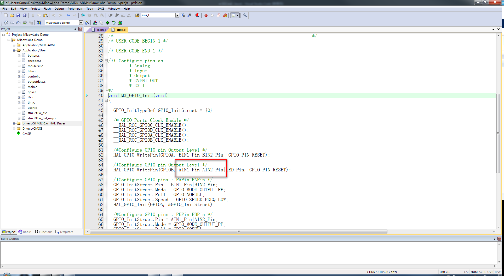

直立平衡角度环PID控制
本小节主要教你编写角度环 PID 控制相关的代码和对 PID 参数进行整定。
补充相关初始化代码
为了降低学习难度，便于萌新们学习，在编码器和驱动电机的例程中，我们以一个电机为例，进行了具体的操作设置。但是，两轮自平衡小车是有两个电机的，所以，在进行直立平衡角度环 PID 控制之前，我们需要先对另一个电机相关的还没初始化的相关引脚进行初始化。
在《PWM与TB6612FNG驱动电机》一节中，我们配置了一个电机的相关控制引脚（TIM3_CH2、PA3、PA4），在这里对另一个电机的相关控制引脚（TIM3_CH1、PB0、PB1）。
回到 STM32CubeMX 软件界面，在左侧 Pinout&Configuration 界面中的 Timers 下拉中点击 TIM3，然后在 TIM3 Mode and Configuration 的 Mode 中将 Channel1 选择为 PWM Generation CH1。因为我们之前配置 Channel2 的时候，已经对参数设置选项卡做出了对应的修改，这时就不用再修改了。
回到 STM32CubeMX 软件界面，在右侧界面的芯片中分别点击 PB0、PB1，并将其配置为 GPIO_Output。在 System Core 下拉菜单中选择 GPIO，然后在左侧的 System Core 下拉菜单中选择 GPIO，然后在 GPIO Mode and Configuration 中对 PA3、PA4 引脚进行配置，GPIO output level 代表 GPIO 默认输出电平，在这里设置为低电平；GPIO mode 代表 GPIO 引脚模式，在这里设置为推挽输出；GPIO Pull-up/Pull-down 即 GPIO 上拉或下拉，在这里设置为既不上拉也不下拉；Maximum output speed 即 最大输出速度，在这里设置为低速；User Label 即用户标签，在这里将 PA0 改为 AIN1，PB1 改为 AIN2。

在《Timer编码器模式读取编码器》一节中，我们只配置 TIM4 为编码器模式，没有配置 TIM2。在这里对 TIM2 进行补充配置，其实很简单，跟之前配置 TIM4 一样的。
进入我们上一小节修改过的 MiaowLabs-Demo 文件夹，找到 MiaowLabs-Demo.ioc 工程文件，双击，打开工程。在左侧 Pinout&Configuration 界面中的 Timers 下拉中点击 TIM2，然后在 TIM2 Mode and Configuration 的 Mode 中将 Combined Channels 选择为 Encoder Mode，即编码器模式。
在 Configuration 中选择 Parameter Setting 选项卡，进行基本参数配置。其中，Counter Mode 默认为 Up，即向上计数。Counter Period 设置为 65535，即计数器周期，这是一个 16 位的自动加载寄存器，填写范围为 0~65535。Encoder Mode 设置为 Encoder Mode TI1 and TI2，即两个输入 TI1 和 TI2 都被用来作为增量编码器的接口。Polarity 默认为 Rising Edge，即为捕获上升沿。其他参数默认即可。
点击 GENERATE CODE，重新生成代码。
打开 MDK-ARM 工程，左侧 Application/User main.c 源文件的 main 函数里的 GPIO 初始化函数： MX_GPIO_Init();，可以看到里面新增了我们刚才添加的 AIN1 和 AIN2 引脚。

点开 TIM3 初始化函数 MX_TIM3_Init();，能看到里面 Channel1 和 Channel2 的相关代码都已经有了。
至此，STM32CubeMX 软件部分的初始化配置就完成了，接下来，要修改我们之前定义的算法代码。
角度环PID控制
在 control.c 文件中里敲下以下代码：
#include "control.h"
#include "filter.h"
#include "mpu6050.h"
#include "math.h"
#include "outputdata.h"
#include "tim.h"
#include "main.h"
#define MOTOR_OUT_DEAD_VAL 0 //死区值
#define MOTOR_OUT_MAX 100 //占空比正最大值
#define MOTOR_OUT_MIN (-100) //占空比负最大值
#define CAR_ANGLE_SET 0//目标角度
#define CAR_ANGLE_SPEED_SET 0//目标角速度
short x_nAcc,y_nAcc,z_nAcc;//加速度x轴、y轴、z轴数据
short x_nGyro,y_nGyro,z_nGyro;//陀螺仪x轴、y轴、z轴数据
float x_fAcc,y_fAcc,z_fAcc;//用于存储加速度x轴、y轴、z轴数据运算后的数据
float g_fAccAngle;//加速度传感器经过atan2()解算得到的角度
float g_fGyroAngleSpeed;//陀螺仪角速度
float g_fCarAngle;//小车倾角
float dt = 0.005;//互补滤波器控制周期
unsigned int g_nMainEventCount;//主事件计数，用在中断中
unsigned int g_nGetPulseCount;//捕获脉冲计数，用在中断中
unsigned int g_nLeftMotorPulse,g_nRightMotorPulse;//全局变量，保存左电机脉冲数值
int nPwmBais;//PWM增量
int nLeftMotorPwm,nRightMotorPwm;//左电机PWM输出总量，左电机PWM输出总量
int nLeftMotorErrorPrev,nRightMotorErrorPrev;//左电机上一次偏差，右电机上一次偏差
float g_fLeftMotorOut,g_fRightMotorOut;
float g_fAngleControlOut;
void GetMpuData(void)//读取MPU-6050数据
{
MPU_Get_Accelerometer(&x_nAcc,&y_nAcc,&z_nAcc);//获取MPU6050加速度数据
MPU_Get_Gyroscope(&x_nGyro,&y_nGyro,&z_nGyro); //获取MPU6050陀螺仪数据
}
void AngleCalculate(void)//角度计算
{
//-------加速度数据处理--------------------------
//量程为±2g时，灵敏度：16384 LSB/g
x_fAcc = x_nAcc / 16384.0;
y_fAcc = y_nAcc / 16384.0;
z_fAcc = z_nAcc / 16384.0;
g_fAccAngle = atan2(y_fAcc,z_fAcc) * 180.0 / 3.14;
//-------陀螺仪数据处理-------------------------
//范围为2000deg/s时，换算关系：16.4 LSB/(deg/s)
g_fGyroAngleSpeed = x_nGyro / 16.4; //计算角速度值
//-------互补滤波---------------
g_fCarAngle = ComplementaryFilter(g_fAccAngle, g_fGyroAngleSpeed, dt);
OutData[0]=g_fAccAngle;//发送加速度初步计算的角度
OutData[1]=g_fGyroAngleSpeed;//发送陀螺仪角速度
OutData[2]=g_fCarAngle;//发送数据融合得到的角度
}
void GetMotorPulse(void)//读取电机脉冲
{
g_nLeftMotorPulse = (short)(__HAL_TIM_GET_COUNTER(&htim4));//获取计数器值
__HAL_TIM_SET_COUNTER(&htim4,0);//TIM4计数器清零
g_nRightMotorPulse = (short)(__HAL_TIM_GET_COUNTER(&htim2));//获取计数器值
__HAL_TIM_SET_COUNTER(&htim2,0);//TIM2计数器清零
}
int SpeedInnerControl(int nPulse, int nTarget, int nPwm, int nErrorPrev)//速度内环控制
{
int nError;//偏差
float fP = 10.0, fI = 0.9;//这里只用到PI，参数由电机的种类和负载决定
nError = nPulse - nTarget;//偏差 = 目标速度 - 实际速度
nPwmBais = fP * (nError - nErrorPrev) + fI * nError;//增量式PI控制器
nErrorPrev = nError;//保存上一次偏差
nPwm += nPwmBais;//增量输出
if(nPwm > 100) nPwm = 100;//输出饱和处理，限制上限，防止超出PWM量程
if(nPwm <-100) nPwm =-100;
//OutData[0]=(float)nPulse;//速度实际值
//OutData[1]=(float)nTarget ;//速度目标值
//OutData[2]=(float)nPwm;//PWM输出值
return nPwm;//返回输出值
}
void SetMotorVoltageAndDirection(int nLeftMotorPwm,int nRightMotorPwm)//设置电机电压和方向
{
if(nRightMotorPwm < 0)//反转
{
HAL_GPIO_WritePin(AIN1_GPIO_Port, AIN1_Pin, GPIO_PIN_SET);
HAL_GPIO_WritePin(AIN2_GPIO_Port, AIN2_Pin, GPIO_PIN_RESET);
nRightMotorPwm = (-nRightMotorPwm);//如果计算值是负值，负值只是表示反转，先转负为正，因为PWM寄存器只能是正值
__HAL_TIM_SET_COMPARE(&htim3, TIM_CHANNEL_1, nRightMotorPwm);
}else//正转
{
HAL_GPIO_WritePin(AIN1_GPIO_Port, AIN1_Pin, GPIO_PIN_RESET);
HAL_GPIO_WritePin(AIN2_GPIO_Port, AIN2_Pin, GPIO_PIN_SET);
__HAL_TIM_SET_COMPARE(&htim3, TIM_CHANNEL_1, nRightMotorPwm );
}
if(nLeftMotorPwm < 0)//反转
{
HAL_GPIO_WritePin(BIN1_GPIO_Port, BIN1_Pin, GPIO_PIN_SET);
HAL_GPIO_WritePin(BIN2_GPIO_Port, BIN2_Pin, GPIO_PIN_RESET);
nLeftMotorPwm = (-nLeftMotorPwm);//如果计算值是负值，负值只是表示反转，先转负为正，因为PWM寄存器只能是正值
__HAL_TIM_SET_COMPARE(&htim3, TIM_CHANNEL_2, nLeftMotorPwm);
}else//正转
{
HAL_GPIO_WritePin(BIN1_GPIO_Port, BIN1_Pin, GPIO_PIN_RESET);
HAL_GPIO_WritePin(BIN2_GPIO_Port, BIN2_Pin, GPIO_PIN_SET);
__HAL_TIM_SET_COMPARE(&htim3, TIM_CHANNEL_2, nLeftMotorPwm);
}
}
void MotorOutput(void)//电机输出函数,将直立控制、速度控制、方向控制的输出量进行叠加,并加入死区常量，对输出饱和作出处理。
{
g_fLeftMotorOut = g_fAngleControlOut;//这里的电机输出等于角度环控制量，还没加入速度环外环等控制
g_fRightMotorOut = g_fAngleControlOut;
/*增加电机死区常数*/
if((int)g_fLeftMotorOut>0) g_fLeftMotorOut += MOTOR_OUT_DEAD_VAL;
else if((int)g_fLeftMotorOut<0) g_fLeftMotorOut -= MOTOR_OUT_DEAD_VAL;
if((int)g_fRightMotorOut>0) g_fRightMotorOut += MOTOR_OUT_DEAD_VAL;
else if((int)g_fRightMotorOut<0) g_fRightMotorOut -= MOTOR_OUT_DEAD_VAL;
/*输出饱和处理，防止超出PWM范围*/
if((int)g_fLeftMotorOut > MOTOR_OUT_MAX) g_fLeftMotorOut = MOTOR_OUT_MAX;
if((int)g_fLeftMotorOut < MOTOR_OUT_MIN) g_fLeftMotorOut = MOTOR_OUT_MIN;
if((int)g_fRightMotorOut > MOTOR_OUT_MAX) g_fRightMotorOut = MOTOR_OUT_MAX;
if((int)g_fRightMotorOut < MOTOR_OUT_MIN) g_fRightMotorOut = MOTOR_OUT_MIN;
SetMotorVoltageAndDirection((int)g_fLeftMotorOut,(int)g_fRightMotorOut);
}
void AngleControl(void) //角度环控制函数
{
float fP = 5.0;//角度环P参数
float fD = 0.2;//角度环D参数
g_fAngleControlOut = (CAR_ANGLE_SET - g_fCarAngle) * fP + (CAR_ANGLE_SPEED_SET - g_fGyroAngleSpeed) * fD;//PD控制器
}
因为角度环 PID 控制已经涉及到使用两轮自平衡小车的两个电机，所以在本次实验的大部分函数跟上一个实验不太一样，需要改成适用于两个电机。
在 control.h 中声明函数和变量，敲入以下代码：
#ifndef __CONTROL_H
#define __CONTROL_H
#include "filter.h"
extern unsigned int g_nMainEventCount;//主事件计数，用在中断中
extern unsigned int g_nGetPulseCount;//捕获脉冲计数，用在中断中
extern float g_fCarAngle;
extern unsigned int g_nLeftMotorPulse;
extern int g_nSpeedTarget;
extern int g_nLeftMotorOutput;
void GetMpuData(void);
void AngleCalculate(void);
void GetMotorPulse(void);
int SpeedInnerControl(int nPulse, int nTarget, int nPwm, int nErrorPrev);
void SetMotorVoltageAndDirection(int nLeftMotorPwm,int nRightMotorPwm);
void MotorOutput(void);
void AngleControl(void);
#endif
在 stm32f1xx_it.c 中的 SysTick 中断服务函数中，即滴答中断服务函数中，敲入以下代码：
void SysTick_Handler(void)
{
/* USER CODE BEGIN SysTick_IRQn 0 */
g_nMainEventCount++;//每进一次中断，主事件函数自动加1
if(g_nMainEventCount>=5)//SysTick是1ms一次，这里判断语句大于5就是5ms运行一次
{
g_nMainEventCount=0;//主事件循环每5ms循环一次，这里清零，重新计时。
GetMotorPulse();//每5ms捕获一次脉冲
}else if(g_nMainEventCount==1){//这1ms时间片段获取数据和角度计算
GetMpuData();//获取MPU-6050数据
AngleCalculate(); //进行角度计算
}else if(g_nMainEventCount==2){
AngleControl(); //这1ms时间片段进行角度控制
}else if(g_nMainEventCount==3){
//这1ms时间片段暂时啥都不干
}else if(g_nMainEventCount==4){
MotorOutput(); //电机输出函数，每5ms执行一次
}
ButtonScan();
/* USER CODE END SysTick_IRQn 0 */
HAL_IncTick();
/* USER CODE BEGIN SysTick_IRQn 1 */
/* USER CODE END SysTick_IRQn 1 */
}
上个实验中，我说过 SysTick 定时器在 STM32CubeMX 中被用于 HAL 库的延时，默认是每 1ms 中断一次。我们想要每 5ms 进行完一次全部控制，我们可以定义一个 5ms 的定时中断，比如使用 Timer1（定时器1）。这是可取的方法。但由于在这里，Timer2 和 Timer4 已经配置成编码器模式，Timer3 已经配置成 PWM 输出模式，只剩下 Timer1 和 SysTick 定时器可以用了。我们后续还想继续扩展，比如扩展超声波避障，那么还需要用到定时器，得预留一路定时器备用，于是这里，我们决定预留 Timer1，使用 SysTick 定时器。 可是，偏偏 SysTick 定时器又是 1ms 就中断一次，我们可不想对其进行改动，比如设置成 5ms 中断一次，一旦改动了延时函数啥得又得跟着改了，多麻烦？有没有省心一点的办法？肯定有啦，聪明的你可能也会想到，只要将本来 5ms 内要运行的代码，分成 5 次，每次在 1ms 内运行完也是一样的效果。我们利用一个计数变量 g_nMainEventCount，然后进行计数，将代码分割好，分别放在每个 1ms 内执行，这样就大功告成啦。我们也正是这样干了，取得很好的执行效果。
另外，捕获脉冲函数 GetMotorPulse() 是 5ms 执行一次，因为如果执行得太快，比如 1ms 执行一次，能捕获到的脉冲数比较少，这样误差会比较大，所以这个执行时间要适当。
在 main.c 源文件中加入以下初始化代码：
/* USER CODE BEGIN 2 */
if(!MPU_Init())//如果MPU6050初始化成功，返回0，!0则为1
{
printf("MPU-6050 Init Successfully");//成功了则打印 MPU-6050 Init Successfully
}
HAL_TIM_Encoder_Start(&htim4, TIM_CHANNEL_ALL);//开启TIM4的编码器接口模式
HAL_TIM_Encoder_Start(&htim2, TIM_CHANNEL_ALL);//开启TIM2的编码器接口模式
HAL_TIM_PWM_Start(&htim3,TIM_CHANNEL_1);//开启TIM3_CH1的PWM输出
HAL_TIM_PWM_Start(&htim3,TIM_CHANNEL_2);//开启TIM3_CH2的PWM输出
/* USER CODE END 2 */
/* Infinite loop */
/* USER CODE BEGIN WHILE */
while (1)
{
//printf("小车角度 = %f",g_fCarAngle);
//HAL_Delay(500);//延时0.5s，防止打印发送数据太快
//HAL_GPIO_TogglePin(LED_GPIO_Port,LED_Pin);
if(g_iButtonState == 1)
{
//g_nSpeedTarget +=10;
HAL_GPIO_TogglePin(LED_GPIO_Port,LED_Pin);
HAL_Delay(10);
//OutPut_Data();//调用虚拟示波器的发送函数
}
//OutPut_Data();//调用虚拟示波器的发送函数
}
主要就是开启定时器的编码器接口模式和 PWM 输出，STM32CubeMX 软件只是负责配置和生成相关底层代码，但是要我们开启才能使用。并且，在主循环中，把一些无关的代码，注释掉，只保留一个按键控制 LED 亮灭功能。
到这里，角度环 PID 控制的框架已经搭建好了。接下来，就是对 PID 参数进行调试的事情了。PID 参数一般都是先调好内环再调外环。速度闭环内环作为内环，是直接对接电机的一环，其 PID 参数在上一个实验已经取得一组不错的参数，我们可以直接使用。本实验最重要的，是对角度环 PID 参数进行调试，要取得一组良好效果的参数。
让我们看看角度环控制函数 AngleControl() ：
void AngleControl(void) //角度环控制函数
{
float fP = 5.0;//角度环P参数
float fD = 0.2;//角度环D参数
g_fAngleControlOut = (CAR_ANGLE_SET - g_fCarAngle) * fP + (CAR_ANGLE_SPEED_SET - g_fGyroAngleSpeed) * fD;//PD控制器
}
先简单说明下角度环控制函数AgnleControl（）里面用到的变量：
- g_fCarAngle：小车角度；
- g_fGyroAngleSpeed：小车角速度，其实就是陀螺仪数值；
- CAR_ANGLE_SET：小车期望角度值，也是机械中值，宏定义，在里面可以看到设定为 0，因为我们的小车的重心分布在小车的轮轴之上，而且期望小车保持直立，随时保持为角度为 0 的状态。如果小车的重心不是在车轴上，而是偏向一边，那么要减去个偏差的值。 *CAR_ANGLE_SPEED_SET：小车期角速度值，宏定义，在这里可以看到设定为0，因为我们期望小车保持直立，随时保持为角速度为 0 的状态。
PD 控制器比较简洁明了，就一句话，我们通过 PD 控制器计算直立控制 PWM。
需要说明的是，在两轮自平衡小车的直立平衡控制环节中，选择 PD 控制而非 PID 控制的原因在于：
两轮自平衡小车的姿态检测信号中不可避免地存在噪声信号，这些噪声信号经过积分I环节会随着时间不断地累积，从而导致积分器失去消除静差的调节功能并产生控制误差；
两轮自平衡小车的轮胎与地面的摩擦会产生阻尼作用，这种阻尼可以克服小车姿态倾角静差的持续增加。
确定 fP 值的极性（令 fD=0）
首先我们估计 fP 的取值范围。我们的 PWM 量程设置的为 0~100，0 代表占空比 0%，100 代表占空比 100%。假如我们设定 fP 值为 25，那么两轮自平衡小车在 ±4° 的时候就会输出 100% 占空比，即电机全力满转。根据我们的感性认识，这显然太大了，那我们就可以估计 fP 值在 0~25 之间，首先大概我们给一个值 fP=-5，我们可以观察到，小车往哪边倒，电机会往另一边加速转动，导致小车倒下得更快，就是一个我们不愿看到的正反馈的效果，说明 fP 值的极性反了。接下来我们设定 fP=5,这个时候可以看到两轮自平衡小车有直立的趋势，虽然响应太慢，但是，我们可以确定 fP 值极性是正的。具体的数据接下来再仔细调试。
确定 fP 值的大小（令 fD=0，请结合本小节开头的直立控制函数理解）
确定参数的原则是：
fP 一直增加，直到出现大幅度的低频摆动。
- 设定 fP=1，这个时候我们可以看到，小车虽然有平衡的趋势，但是显然响应太慢了。
- 设定 fP=2，这个时候我们可以看到，小车虽然有平衡的趋势，而且响应有所加快，但是响应还是不足以让小车保持平衡。
- 设定 fP=5，这个时候我们可以看到，小车的响应明显加快，而且来回推动小车的时候，会有大幅度的低频摆动。说明这个时候 kp 值已经足够大了，需要增加微分控制削弱 P 控制，抑制低频摆动。
确定 kd 值的极性（令 kp=0）
我们得到的 MPU-6050 输出的陀螺仪的原始数据，通过观察数据，我们发现最大值不会超过 4 位数（正常应用在两轮自平衡小车上的时候），在经过单位换算（/16.4）后，数值不超过 61， 再根据100 代表占空比 100%，所以我们估算 kd 值应该在 0~1.6 之间，我们先设定 fD=-0.1，当我们拿起小车旋转的时候，车轮会反向转动，并没有能够实现跟随效果。这说明了 fD 的极性反了。接下来，我们设定 fD=0.1。这个时候我们可以看到，当我们旋转小车的时候，车轮会同向以相同的速度跟随转动，这说明我们实现了角速度闭环，至此，我们可以确定 fD 的极性是正的。
确定 fD 值的大小（令 fP=5.0，请结合本小节开头的直立控制函数理解）
确定参数的原则是： fD 一直增加，直到出现高频抖动。设定 fD=0.1,这个时候我们可以看到，低频大幅度频抖动已经基本消除。设定 fD=0.2,这个时候我们可以看到，整体性能已经非常棒。设定 fD=0.3,这个时候我们可以看到，小车开始出现高频剧烈抖动。
至此，我们可以确定得到 fP=5，fD=0.3 是 P、D 参数的临界值。然后我们进行最关键的一步，在临界值的附近进行参数微调（一般取值比临界值小）。这个时候我们可以看到，小车运行非常平稳，但是依然无法保持长时间的直立，直立很短一段时间后会往一个方向加速倒下。这个等我们下面加上速度环才能得到更好的性能。只有直立环是很难让小车达到很好的直立效果的。 至此，直立调试部分就告一段落了。